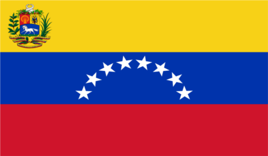

Bandera del Reino de España, oficial en el país desde su creación en 1785 hasta la aprobación del pabellón venezolano en 1811.

Bandera de José Leonardo Chirinos , en 1795.
Bandera de Gual y España, en 1797.

Bandera militar de Miranda, en 1800.
Bandera Naval de Miranda, en 1806.
Bandera de la Junta Suprema de Caracas.
Bandera de la Primera República el 1811.

Bandera de la Guerra a Muerte, que sirvió de pabellón de la Segunda República en 1813.
Bandera de la Tercera República en 1817, con 7 estrellas.
Bandera de la Tercera República en 1817, con 8 estrellas.
Bandera de la Gran Colombia de 1819.
La bandera provisional del Estado de Venezuela. Vigente desde 1830 hasta 1836.
La bandera de franjas iguales, conocida así por restaurar la proporción entre las franjas. Vigente desde 1836 hasta 1859.
La Bandera de Federación, proclamada en Coro luego de estallada la Guerra Federal. Vigente desde febrero hasta junio de 1859.
La Bandera de Federación, nueva versión aprobada en Barinas. Vigente desde junio de 1859 hasta 1863.

Bandera de Venezuela decretada por el presidente Juan Cristófomo Falcón informe oficial desde 1863 hasta 1905.
Bandera del país, oficializada por el General Cipriano Castro desde 1905 hasta 1930.
Bandera Nacional de 7 estrellas en semicírculo. Oficial desde 1930 hasta 1954.
Bandera de Venezuela con 7 estrellas, y el Escudo, oficial desde 1954 hasta el 2006.
La Asamblea Nacional el día 9 de marzo de 2006, aprobó la inclusión de una octava estrella y se cambió el antiguo escudo por el nuevo.
